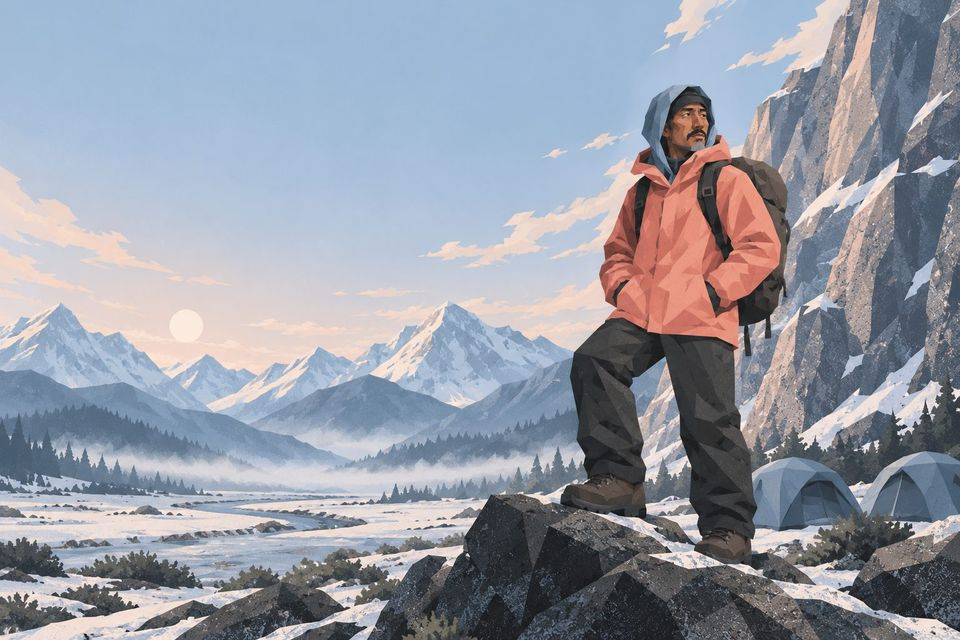

Tense game
The Climb
Climb the mountain with Tensing and the team. Each camp is one tense, and every right answer takes you higher.

The team
Tensing, the guide
- I'm Tensing, your guide. Thirteen camps to the top, and one tense at each camp.
- Every line the team says has a gap. Fill it, and we climb.
- Miss one, and the rope holds: you read why, and that line comes back before we leave the camp.
 Tensingthe guide
Tensingthe guide- Anathe planner
- Ottothe old hand
- Samfirst big climb
- Dorisbase camp radio
And Momo, the yak at base camp.
Choose a camp
The way up has no locks: start at whichever camp you need.